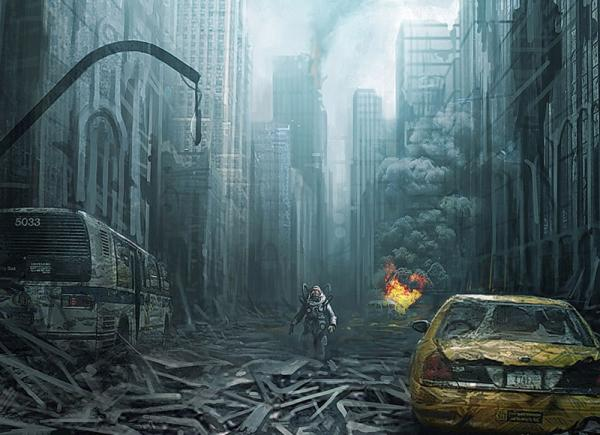
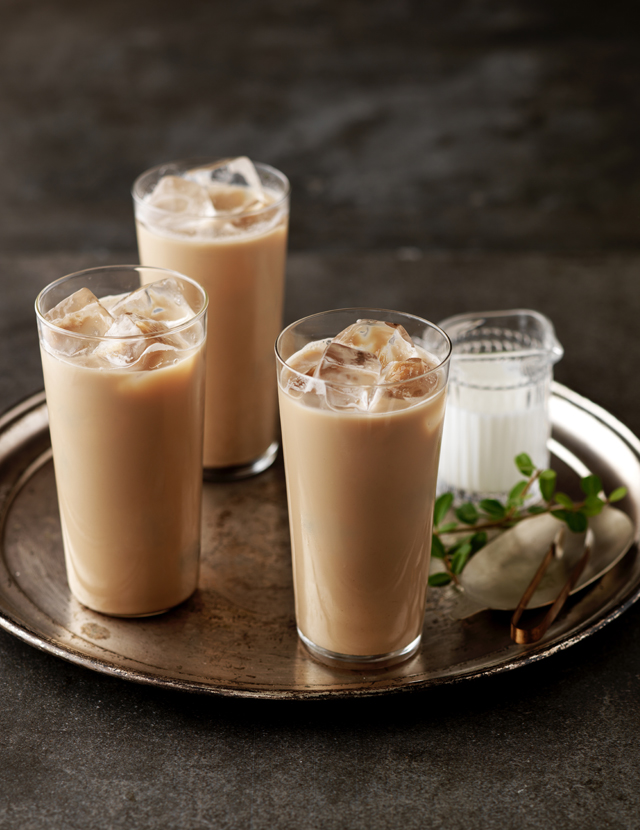

| 자기소개서 | |
|---|---|
|
이은경 |
| 31세 | |
| 사상구 엄궁동에 거주중 입니다. | |
| 내가 좋아하는 것들 | |
|  |  |
| 제가 좋아하는 것은 다큐멘터리 입니다. 애니멀 다큐나 환경 다큐의 경우엔 적자 생존, 약육 강식과 같은 하이퍼리즘을 다양한 시각으로 볼 수 있어서 좋아하는 편입니다. |
커피보다 차를 주로 즐기는 편입니다. 다양한 종류의 녹차도 좋아하지만, 주로 밀크티를 찾아 마십니다. 카페 개인마다 홍차와 우유, 설탕이나 시럽의 비율이 달라서 흥미롭습니다. |
| 내가 가고싶은 곳들 | |
| 기회만 된다면 스위스의 자연 경관을 감상해 보고 싶습니다. 공짜가 없으며 물가가 비싼 나라라고 하지만 눈이 트일 만큼 경치가 아름답다고 들었기 때문에 꼭 한번 쯤 가보고 싶습니다. |
어릴 적 수학 여행의 기본 코스지만 부모님을 모시고 가본적이 없어서 부모님과 함께 경주 여행을 가보고 싶습니다. 어머니께서 항상 가족끼리 경주에 가보고 싶다고 하셨는데, 기회를 만들지 못해서 이번 기회에 꼭 데려가 드리고 싶습니다. |